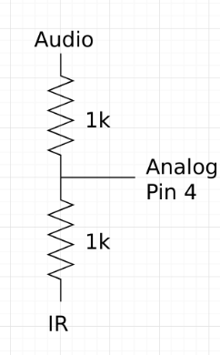
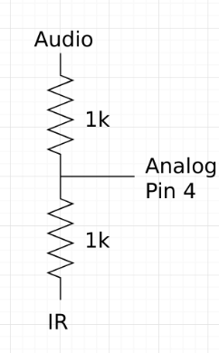

The Fall of a Legend: LABron
Introduction
ECE 3400 was a course based around the design of a maze tracing robot, controlled by a pre programmed Arduino, and including functionality like line-tracing, radio communication, FFT analysis of IR and Audio input, etc. The methods by which we completed each subtask leading up to competition are detailed below. The first portion of our robot design was beginning on a 660Hz tone. This was performed by continuous microphone polling and FFT analysis. Later, a pushbutton was added and polled for a start signal as well. The next portion of our robot design was the methodology by which we actually explored the maze. This was first done by learning to trace lines with our completed robot. 3 line sensors on the front of LABron were used to achieve this, and as all 3 line sensors detected a line at an intersection, LABron’s onboard Arduino would determine which direction to move in based off of additional information like nearby walls (supplied by distance sensors mounted on the front and sides) as well as internal memory and position tracking, determining whether LABron had been to a specific node before. During this process of traversing the maze, LABron also had to access his radio component to report location and maze information to a base station. This was only done at intersections in our final design and was executed using a bit masking strategy discussed below to reduce our total radio transmission to 2 bytes. One of the last components of LABron was checking for the presence of other robots. This was accomplished by using an IR LED and checking for spikes from other robots IR hats. The final portion of LABron’s design was the incorporation of an FPGA performing image processing on a camera output. The camera was used to search the maze for red and blue trasures in the shape of triangles, squares, and diamonds. This implementation is also discussed below.


Final Design
One of the first things we did with our Arduino was disable the pull-up resistors on our I2C lines; this was necessary because of a voltage mismatch between the camera and Arduino (damage to the camera would results if we hadn't done this). Next, we setup our FPGA to provide a common 24 MHz clock signal to our camera and began playing around with setting registers and reading their values back on our Arduino. After this, we simply followed a camera pinout diagram and were finished with this portion of our lab.

Physical Design
As can be seen above, LABron has sensors attached attached primarily to the front and sides. The three red pieces of plastic running down the front of LABron hold the line sensors. Above and located on the front and sides are distance sensors which were used for wall detection. On the bottom we've attached an FPGA to interpret the data stream from the front-mounted camera. On the back and tucked behind the FPGA are batteries to power our robot. Finally, the breadboard on top of LABron was split into two halves, powering the FFT amplifier, LED signal, and pushbutton in the back and leaving the sensor output and routing for the front half of the breadboard. This was eventually replaced with the protoboard to the right, though a test indiciated a miss-wiring and we were unable to finish it for competetion. Beneath the yellow plastic is our Arduino control unit, a radio attached directly to GPIO pins and our IR Hat.

Electrical Layout
Below is our pinout from our Arduino
- A0 = Left Line Sensor
- A1 = Middle Line Sensor
- A2 = Right Line Sensor
- A3 = Middle Wall Sensor
- A4 = Mux Output, taking in Left & Right Wall Sensor Outputs
- A5 = Audio and IR signal
- D2 - D4 = FPGA Communication
- D5 = Right Servo
- D6 = Left Servo
- D7 = Pushbutton Start
- D8 = Mux Select Pin to read Left or Right Wall Sensor
- D9-13 = Radio
These were all the pins we needed to accomplish the tasks discussed in the Introduction to our final design.

Starting on a 660Hz Signal and IR Sensing
An inverting amplifier from Team Alpha using the LF353 op-amp (http://www.ti.com/lit/ds/symlink/lf353-n.pdf) with (380 kOhm / 3.8 kOhm) = 100x gain was built. A final schematic of the audio circuit and the results of amplification are shown below. In the scope image, the blue waveform (CH 2) is the audio signal before amplification and the yellow waveform (CH 1) is the waveform after amplification.
A simple RC low pass filter after the output of the amplifier was also put in to block unwanted frequencies. The cutoff frequency was put at 1326 Hz with a 12 kOhm resistor and a 100 uF capacitor (1/(2*pi*RC) = 1326).
The FFT3 library (http://wiki.openmusiclabs.com/wiki/ArduinoFFT)’s FFT functions were used to detect the 660 Hz tone. A picture of an audio FFT diagram using the FFT3 library on the Arduino is shown below. The bin the 660 Hz tone was in was calculated to be bin 6 since the Arduino was sampling around fs = 67 kHz for 256 samples and (fs/2)*(6/256) = 660.
 The FFT library took up a lot of memory and required a lot of research to not have it slow down or stop other sensor inputs. The ADC register states had to be saved before taking the FFT and restored afterwards.
The FFT library took up a lot of memory and required a lot of research to not have it slow down or stop other sensor inputs. The ADC register states had to be saved before taking the FFT and restored afterwards.
Below is our IR sensor output. Much of the same mechanics described above were used to determine the sampling rate for our IR sensor looking for a 6.08KHz signal, though the gain given to that circuit was slightly less so as to suppress the noise floor. Additionally, the the outputs of the microphone and IR were averaged using resistors in order to save on an analog input and sample both siganls from one FFT analysis.
 

Detecting Other Robots
The competition had penalties for colliding into other robots in the maze. Each robot had an IR hat mounted 5.5” above ground broadcasting at 6 kHz. The base IR signal circuit is shown below. It was a little different from the recommended layout to have non IR signal be roughly GND and have IR signals be positive voltages rather than the other way around. Amplifying this signal was also done with the same inverting op amp configuration biased at 2.5V shown in the audio circuit. A simple RC low pass filter was also added to this circuit to filter out the 18 kHz frequencies broadcasted by decoys. A pole at ~16 kHz was added with a 10 kOhm resistor and a 1 nF capacitor. Though decoys weren’t used in the final competition, the filter stayed on LABron. The FFT function developed in the audio section was also used in for the IR hat. Since the desired signal was at 6 kHz, the bin number to search for was bin 44 since ~6 kHz = (fs/2)*(44/256) with fs = 67 kHz. The IR FFT is shown below
Radio Communications
For the radio communication, it was decided that the most resource efficient transmission time occurred at the intersections of the maze. The RF24 library was used and essentially, all example coded given by the course instructors remained the same minus an additional transmitted byte in the packet. The first byte sent was the current location (the intersection coordinates) and the second byte was that intersection’s “metadata”: walls in each absolute cardinal direction and treasures if any. In this way, LABron updated the base station with maze information at each intersection. Then, the GUI at the base station written by course instructors was updated to reflect that by parsing the Arduino sent packets to the GUI input format.
Arduino-FPGA Communication
Pin Assignments
FPGA Clocks PLL 24 MHz clock for camera 25 MHz for VGA & RAM read cycles 50 MHz for RAM write cycles Color Bar Test Picture of working color bar Camera OV7670 Datasheet Set to output 5 bits red, 5 bits green, 5 bits blue in 2 packets Downsampling VGA driver takes 332 (3 bits red, 3 bits green, 2 bits blue) Downsampling by taking MSB of colors within a packet Basic Logic of FPGA M9K Block memory stores “.input_data” into WRITE_ADDRESS if W_EN is 1 When image frame starts (VSYNC falling edge) and HREF is low Make current X_ADDRESS and Y_ADDRESS 0 When HREF has a falling edge, a new row happens Increment Y_ADDRESS Set X_ADDRESS to 0 HREF rising edge means taking in 2 packet cycles and downsampling, then incrementing X_ADDRESS Write the downsampled pixel into the memory The VGA driver increments its READ_ADDRESS according to the clock it’s hooked up to Outputs pixel data on screen Color Detection For each frame, count the number of red and blue pixels Red meant a certain amount of red, little blue, and little green Blue meant a certain amount of blue, little green, and a little red was ok If there was more red then blue, the color detection would detect red and vice versa.
Shape Detection
The shape detection update greatly improved the accuracy and quality after multiple corrections. Here is how we do the image processing to detect the treasure shapes (Triangle, Square, and Diamond). Our concept is to find the upper bound and the last bound of the treasure for locating and thus, could dynamically locate the middle three rows for shape detection.
- First of all, we would have to find first row and the last row of the treasure for the second frame for shape detection.
- Because the frame update so fast, the first row and last row wouldn't make much difference between the two frame unless the the camera or the treasure isn't stable enough. Then, the second frame would be able to locate the treasure according to the upper and lower bound row position.
- The middle three rows could detect the shape from comparison each other.
After getting pixel number in each rows, we could follow the following idea to distinguish the shapes.
- Triangle = very few red pixels on top, middle number in middle, and largest number on bottom
- Square = approximately the same number of pixels for each row
- Diamond = very few pixels on top, largest in middle, and very few on bottom
Path Planning
The main task in the competition was to navigate as much of the maze as possible while keeping track of treasures and walls. In order to do this, LABron needed IR sensors to follow a white line. The logic for this sensing was straightforward- whichever sensor had the smallest signal read by the Arduino could be mapped to LABron moving onto a black part of the grid, meaning this sensor was not on a white line. In this way, with three sensors placed in front of LABron, it was possible to detect which sensor was on the white line at a given time, and follow the line based on turning towards that sensor at each timestep. To decide what values of the IR sensor analogRead() corresponded to white tape or black areas, we tested the IR sensors and determined a threshold, which was approximately 180. Because LABron’s movement was prone to noise based on factors like ambient light and battery power, we included functions that made small adjustments to LABron’s direction while line following to keep the robot as close to the middle of the line as possible. Finally, an intersection of the maze corresponded to a spot where all three sensors gave a value that indicated they were over white tape, meaning LABron then had some decision to make about which way to go, based on the walls around him and the spots on the maze he had already explored. To detect walls, we included several more IR sensors on the front, left, and right of LABron. These too had thresholds that were tested and input like the line-following IR sensors, though these tended to be noisier, especially given different lighting conditions. To counteract this, we took a running average of the wall sensor output when we called to these sensors. Additionally, in order to save analog input pins at the expense of digital pins, we incorporated a MUX with inputs from Left and Right wall sensors, flipped based on a digital pin and read from an analog pin. Based on these measurements and the treasure detecting, a bit-masking scheme was developed, where [F-R-L-B-Treasure shape-Treasure color] corresponded to the Front, Right, Left and Behind walls (though the Behind bit was always 0) and treasure shape and color were each encoded with 2 bits. Additionally, another byte corresponded to LABron’s current location given by [xxxx-yyyy]; this condenses the radio transmission to two byte packets at each transmission to update the base station GUI. This meant that LABron’s current coordinates on the map and direction were constantly updated, and had to be manually initialized. Furthermore, it is important to note that the sensor inputs were relative to LABron’s current direction, as opposed to an absolute direction (North-South-East-West), so all sensory input about walls and treasures at a current location had to be transmitted to the base station after deciding their absolute directions based on LABron’s current direction. This facilitated updating LABron’s current position at each timestep as well. Exploring the maze was a task that required path planning. The two algorithms LABron applied to this task were right-hand wall following and depth-first search (DFS). Right-hand wall following is a naive form of exploration that greedily choose the rightmost turn when a wall is not present. It is obvious that this is not an optimal solution to the problem, especially in mazes with several intersections without walls near them (“islands”). In order to avoid this problem, depth-first search was employed. DFS allows traversal of the entire set of reachable nodes by exploring the full subtree of each child before exploring the next child. In other words, a path based on DFS will go to the current location’s neighbor, and then move to the new location’s next neighbor before going back to check the original location’s other neighbors. We felt that this solution was optimal mostly because LABron spends as little time as possible retracing over this own steps as he would in a BFS algorithm (which is ideal except when maximizing the explored area of a maze). In this problem, DFS was employed to search for unexplored spaces, so the internal maze representation allowed us to provide define a condition for terminating the DFS: finding an unexplored location. DFS was implemented using two stacks, one which represented the chosen path and a frontier stack that contained the set of accessible nodes to be explored. At each iteration, the frontier stack was expanded, and the top element from it was added to the path stack. If the frontier stack was not expanded at an intersection, it meant that no additional nodes could be reached from that location and it was time to turn back, so each subsequent path location was popped from both stacks until an unexplored location from the frontier stack could be added to the path stack. We found that in a 9x9 maze, to implement a stack data structure as described in the C++ standard library required much more memory than we had available. So, we implemented these stacks using two 9x9 byte arrays, each initialized with 255 values and updated according to the location. Then, each stack had a “head” int global variable that was incremented/decremented as elements were popped and pushed. In this way, the memory used by the stack was reduced to 2x81 bytes + 2 integers (2 bytes each) to yield a memory requirement of 166 bytes. In the graphic below, we run through a full depth-first search until all nodes have been visited at least once, starting at 0 and ending at 4 after traversing the other two legs of this maze.
Last Minute Fatal Problems
During the competition, unfortunately, several major obstacles were faced that LABron was ultimately unable to overcome. Shortly before the competition, as LABron’s design was being tuned, all sensors stopped working, and LABron’s motion was ruined. This was presumably the result of a circuit failure that short-circuited the Arduino and damaged it, because hours of circuit debugging and baseline software tests (like checking individual line sensor outputs and PWM outputs on the Arduino) seemed to imply. After frantically being repaired with a new Arduino and fixing the circuitry that was moved in taking him apart, it was evident that new bugs were introduced, and LABron was not fixed in time for the competition despite the team’s best efforts. While we succeeded in reintroducing the logic and motion, the circuit had failed somehow because LABron’s turns were wrong and untimely. One small success was the introduction of a functional starting pushbutton, to be used in case LABron’s microphone did not detect the 660 Hz tone amidst the noise of the event itself. The implementation of this was quite simple, adding to our function waitToStart(), which ordinarily continuously called LABron to stop() inside a while loop until an FFT function returned the presence of a 660 Hz tone. We simply connected our pushbutton between a digital input and ground, and also passed out of the waitToStart() function when that particular digital input was read as LOW (ordinarily, it was left floating and determine to be HIGH on the newly installed Arduino).